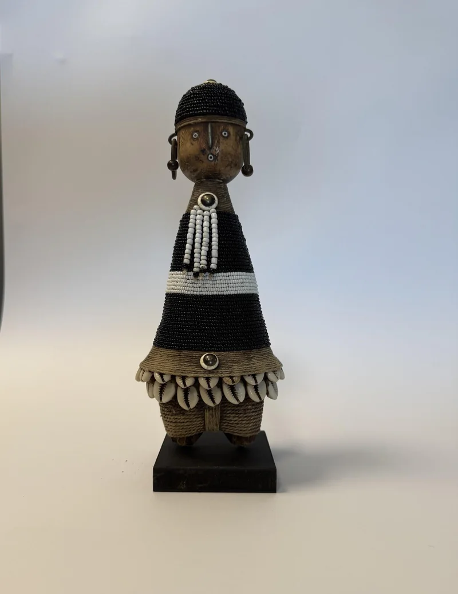
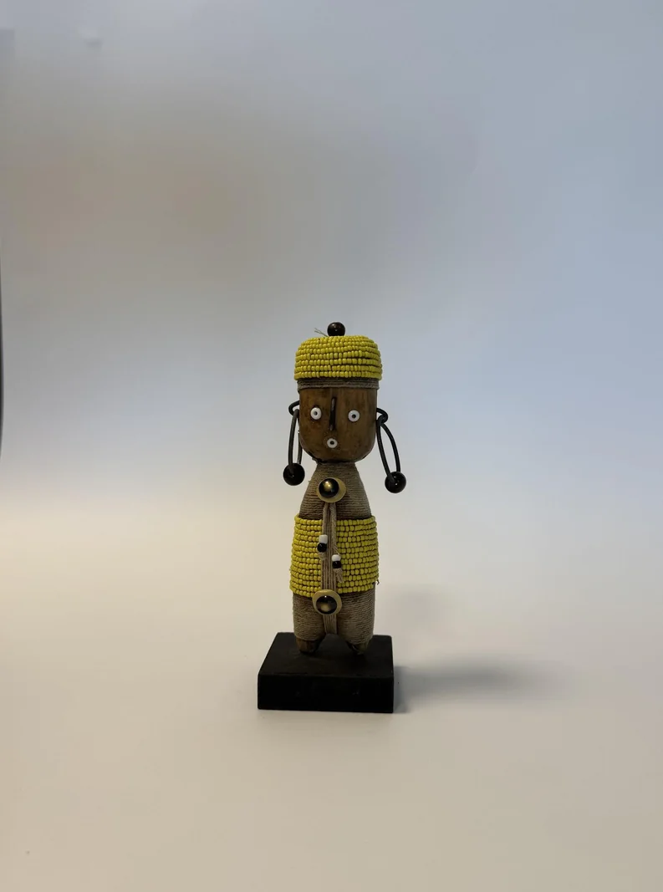

Our Story
The Story
Behind Roots.

The Story Behind Roots
Our Story
Roots was born from a deep connection to where I come from and what I carry with me. Growing up in South Africa, surrounded by rich traditions, vibrant colours and the artistry of everyday life, I learned to see beauty in the handmade and the meaningful.
The name Roots holds two layers of truth. It speaks to my own roots, the place and people who shaped me, and to the roots of the African marula tree, a symbol of life, community and resilience. Just like the marula tree connects deeply to the earth, our work connects to the traditions, skills and stories of the artists who craft each piece.
Every item in our collection, from Namji dolls to beaded decorations and hand-carved wooden displays, is unique, carrying the fingerprint of the artisan who made it. No two are ever the same, because they are created with care, tradition and soul.
At Roots, we don't just sell art. We share stories, heritage and the spirit of Africa, brought to life through hands that have been shaping beauty for generations.

Origin
The Namji People of the Adamawa Region, Cameroon
The Namji — also written Namchi and sometimes called Dowayo — are a people of the Faro and Déo Division in the Adamawa Region of north-central Cameroon. They live primarily in small settlements in the mountains and valleys of this region, maintaining traditional agricultural and pastoral practices alongside a rich material culture.
Their handcrafted dolls are among the most recognised and collected objects of Central African art. They have been present in museum collections and private homes across the world since the early twentieth century, and they continue to be crafted today by artisans who learned the form from their parents and grandparents.
The dolls are known by several names depending on who is speaking about them — the people who make them, the markets that sell them, the collectors who acquire them — but in all contexts they carry a consistent visual identity and cultural weight.
What These Objects Mean
The Symbolism of the Namji Doll
Fertility & Motherhood
A Namji doll was traditionally given to a young woman before her marriage — a blessing for the children she would bear and the household she would build. The rounded belly of many dolls is an explicit fertility symbol.
Prosperity & Good Fortune
Cowrie shells — once used as currency across Africa — are woven into many dolls as talismans of abundance. A home that holds a Namji doll is considered a home that has invited good fortune through the door.
Generational Gifting
A Namji doll is not a one-time gift — it is an object meant to be carried forward. Mothers gave them to daughters, who gave them to theirs. The doll accumulates history and becomes a family record.

The Craft
Carved, Threaded, Adorned by Hand
Each Namji doll begins with a piece of local hardwood — often a dense, tight-grained wood from the surrounding forests. The carver shapes the figure with hand tools, working by feel as much as by sight. The proportions of a Namji doll — the elongated torso, the oversized head, the abstracted limbs — are not anatomical but symbolic: each feature carries meaning that predates any individual craftsperson.
Once carved and smoothed, the figure is passed to the adornment process. Beads are threaded one by one onto cotton or nylon cord, then wound and knotted around the body. Cowrie shells are drilled and tied. Brass rings are hammered and fitted. Leather is cut, wetted, and wrapped. The work is slow, deliberate, and highly skilled.
There is no factory process, no template, no mould. Variations between pieces — in the positioning of shells, the distribution of bead colours, the exact height — are the natural result of the human hand at work. These are not flaws. They are the signatures of individual makers.


Our Curations
A Collection Shaped by Heritage and Craft
Roots Gallery curates handcrafted African art and artisanal home décor. Each piece carries the individuality of the artisan who created it and reflects African heritage, craftsmanship, beauty and tradition.
Our collection spans sculptural Namji dolls, intricately beaded Tikar bangles, handwoven Round Bowl Baskets, and hand-carved wooden pieces. Every object is selected for its character, craftsmanship and ability to bring warmth, heritage and individuality into a space.
As each piece is handcrafted, subtle variations are part of its individual character. This is not imperfection, it is the signature of the human hand.
Explore the collectionOur Curations
Find Your Piece
Browse the full collection of handcrafted African art and artisanal home décor.